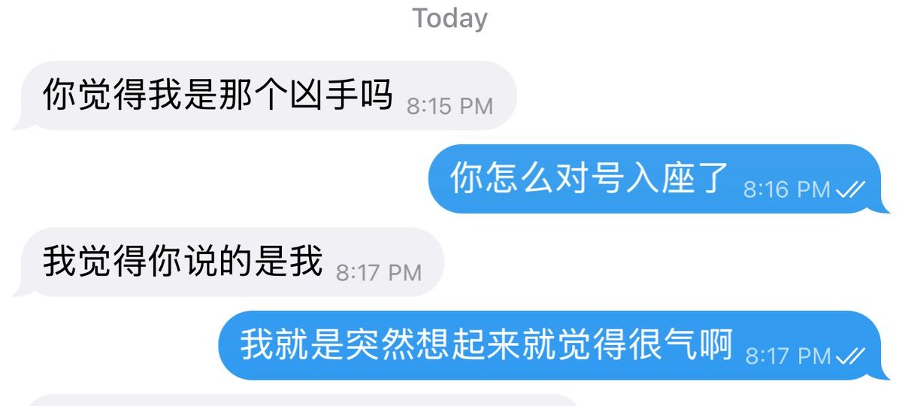
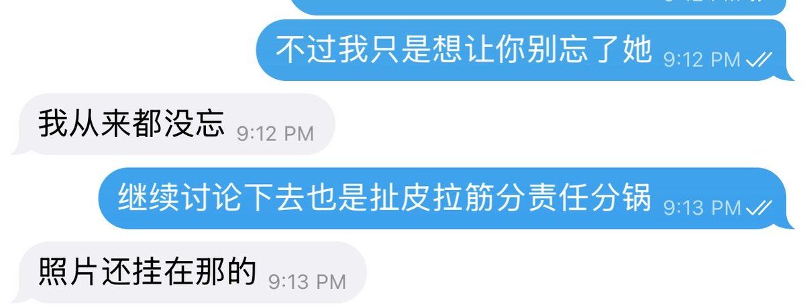
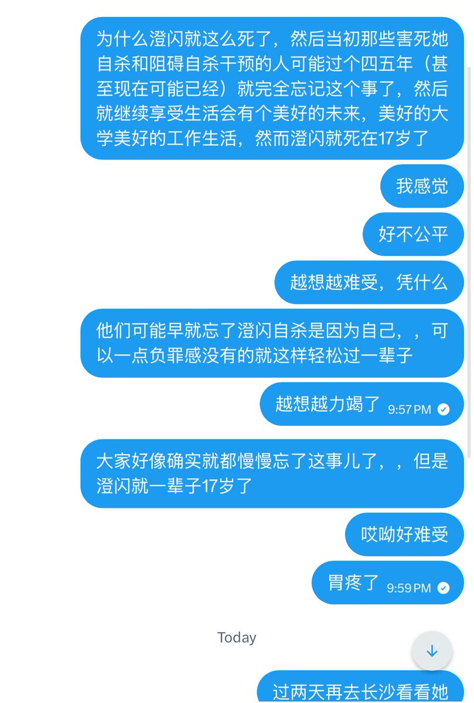
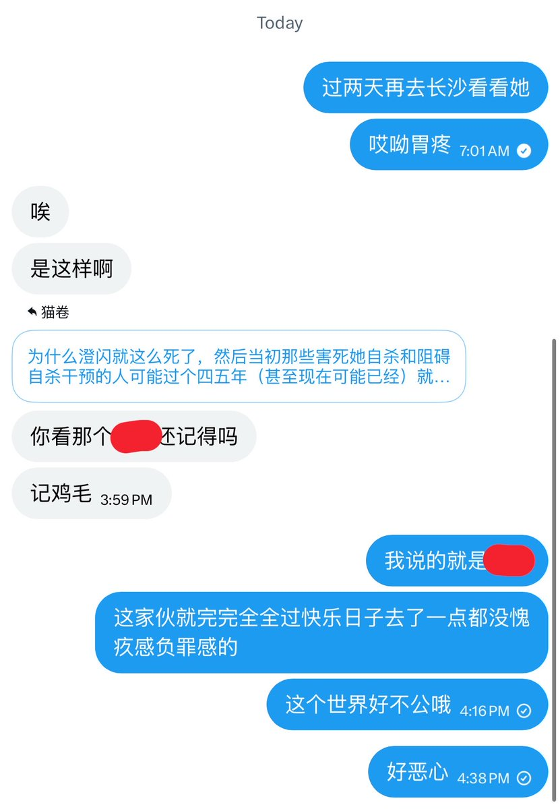

猫卷
@lumigj02
其实一开始有点冲动本来想挂人的，但是没想到当事人直接找我沟通了… TwT
我觉得再旧事重提…… 就算了吧，就算挂也是挂完了以后全是骂TA的，也没什么意义吧……
我只是希望TA不要就这么忘记这件事情，忘记澄闪这个人了…
大家不要忘了小澄闪好不好…




猫卷
@lumigj02
越想越气所以我决定把这些东西发出来
至少不能让大家忘了
有人身上背着一条人命
澄闪是被人害死的 https://t.co/HBG1CwSlVR https://t.co/CEO0EFzjfs